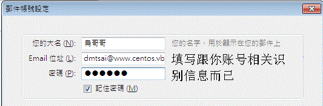
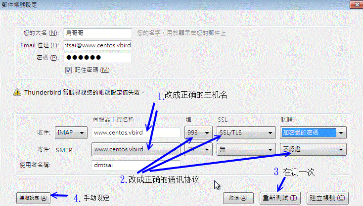
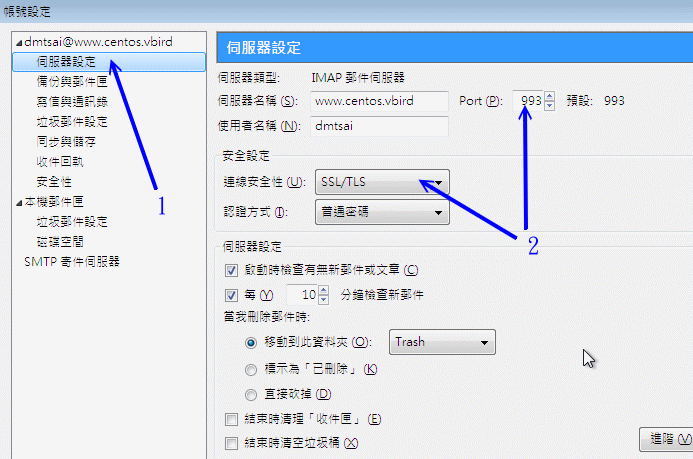
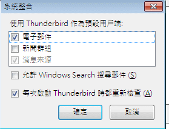
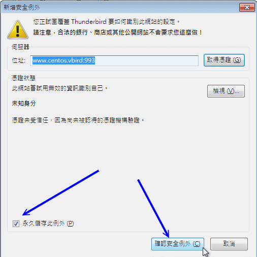
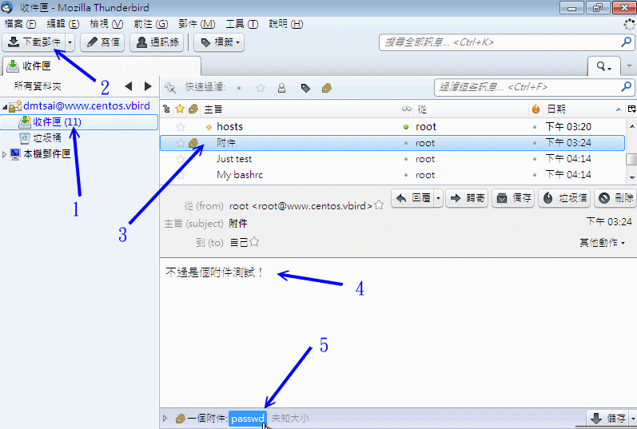

设定 Mail server 不是拿来好看的，当然是要好好的应用他啰！应用 mail server 有两种主要的方式，你可以直接登入 Linux
主机来操作 MTA ，当然也可以透过客户端的 MUA 软件来收发信件，底下我们分别介绍这两种方式啰！
 22.4.1 Linux mail
22.4.1 Linux mail
在 Unix like 的操作系统当中都会存有一支可以进行收发信件的软件，那就是『 mail 』这个指令。这个指令是由 mailx
这个软件所提供的，所以您得要先安装这个软件才行。另外，由于 mail 是 Linux 系统的功能，所以即使你的 port 25
(smtp) 没有启动，他还是可以使用的，只是该封邮件就只会被放到队列，而无法寄出去啰！^_^！底下我们来谈一谈最简单的
mail 用法吧
mail 的用法很简单，就是利用『 mail [email address] 』的方式来将信件寄出去，
那个 [email address] 可以是对外的邮件地址，也可以是本机的账号。如果是本机账号的话，可以直接加账号名称即可。
例如：『 mail root 』或『 mail somebody@his.host.name 』。如果是对外寄信的时候，
信件预设的『 Mail from 』就会填写 main.cf 内那个 myorigin 变数的主机名啰！
先来试看看吧！寄给 dmtsai@www.centos.vbird 先：
[root@www ~]# mail dmtsai@www.centos.vbird
Subject: Just test <==这里填写信件标题
This is a test email. <==底下为信件的内容！
bye bye !
. <==注意，这一行只有小数点！代表结束输入之意！
|
这样就可以将信件寄出去了！另外，早期的 mail server 是可以接受 IP 寄信的，举例来说：
mail dmtsai@[192.168.100.254] ，记得 IP 要用中括号包起来。不过由于受到垃圾邮件的影响，
现在这种方式几乎都无法成功的将信件寄出了。
这可不是『附件夹带』的方式！因为在 mail 这个程序里面编辑信件是个很痛苦的差事，
你不能够按上下左右键来回到刚刚编辑有错误的地方，很伤脑筋。此时我们可以透过标准输入来处理！
如果你忘记『 < 』代表的意义，请回到基础篇的第十一章 bash shell中的数据流重导向瞧瞧先！举例来说你要将家目录的 .bashrc
寄给别人，可以这样做：
[root@www ~]# mail -s 'My bashrc' dmtsai < ~/.bashrc
|
寄信还比较简单，那么收信呢？同样的收信还是使用 mail。直接在提示字符之后输入 mail 时，会主动的捉取使用者在
/var/spool/mail 底下的邮件信箱 (mailbox)，例如我 dmtsai 这个账号在输入 mail 后，就会将
/var/spool/mail/dmtsai 这个档案的内容读出来并显示到屏幕上，结果如下：
# 注意喔！底下的身份使用的是 dmtsai 这个用户来操作 mail 这个指令的呦！
[dmtsai@www ~]$ mail
Heirloom Mail version 12.4 7/29/08. Type ? for help.
"/var/spool/mail/dmtsai": 10 messages 10 new <==信箱来源与新信件数
>N 1 dmtsai@www.centos.vb Mon Aug 8 18:53 18/579 "from vbird"
....(中间省略)....
N 9 root Tue Aug 9 15:04 19/618 "Just test"
N 10 root Tue Aug 9 15:04 29/745 "My bashrc"
& <==这个是 mail 软件的提示字符，可以输入 ? 来察看可用指令
|
在上面的画面中，显示 dmtsai 有一封信，且会附上该信件的发信者与标题及收信时间等。你可以用的指令有这些：
- 读信： (直接按 Enter 或输入数字后 enter)
有看到『 > 』那个符号吧！那表示目前 mail 所在的邮件位置，你可以直接输入 Enter 即可看到该封信件的内容！
另外，你也可以在『&』之后的光标位置输入号码，就可以看该封信件的内容了！(注：如果持续按
Enter，则会自『 > 』符号所在的邮件逐次向后读取每封信件内容！)
- 显示标题： (直接数入 h 或输入 h 数字)
例如有 100 封信，要看 90 封左右的信件标题，就输入『 h90 』即可。
- 回复邮件： (直接输入 R )
如果要回复目前『 > 』符号所在的邮件，直接按下『 R 』即可进入刚刚前面介绍过的 mail
文字编辑画面啰！你可以编辑信件后传回去啰！
- 删除邮件： (输入 d 数字)
按下『 d## 』即可删除邮件！例如我要删除掉第 2 封邮件，可以输入『 d2 』如果是要删除第 10-50
封邮件，可以输入『 d10-50 』来删除喔！请记得，如果有删除邮件的话，离开 mail box 时，要使用『 q
』才行！
- 储存邮件到档案： (输入 s 数字 文件名)
如果要将邮件资料存下来，可以输入『 s ## filename 』，例如我要将上面第 10 封邮件存下来，可以输入『 s 10 text.txt
』即可将第一封邮件内容存成 text.txt 这个档案！
- 离开 mail： (输入 q 或 x )
要离开 mail 可以输入 q 或者是 x，请注意『输入 x 可以在不更动 mail box 的情况下离开 mail
程序，不管你刚刚有没有使用 d 删除数据；使用 q 才会将删除的数据移除。』也就是说，如果你不想更动 mail box
那就使用 x 或 exit 离开，如果想要使刚刚移除的动作生效，就要使用 q 啦！
- 请求协助：
关于 mail 更详细的用法可以输入
help 就可以显现目前的 mail 所有功能！
上面是简易的 mail 收信功能！不过，我们曾经将信件转存下来的话，那该如何读取该信件呢？例如读取刚刚记录的 text.txt
邮件信箱。其实可以简单的使用这个方式来读取：
[dmtsai@www ~]$ mail -f ~/text.txt
|
前面提到的都是信件的内容，那么有没有可能以『附件』的方式来传递档案？是可以的，不过你需要
uuencode 这个指令的帮忙，在 CentOS 当中这个指令属于 sharutils ，请先利用 yum
来安装他吧！接下来你可以这样使用：
[root@www ~]# [利用 uuencode 编码 ] | [利用 mail 寄出去]
[root@www ~]# uuencode [实际档案] [信件中的檔名] | mail -s '标题' email
# 1. 将 /etc/hosts 以附件夹带的方式寄给 dmtsai
[root@www ~]# uuencode /etc/hosts myhosts | mail -s 'test encode' dmtsai
|
这样就能寄出去了，不过，如果收下这封信件呢？同样的我们得要透过译码器来解碼啊！
你得先将该档案存下来，然后这样做：
# 底下的身份可是 dmtsai 这个用户喔！
[dmtsai@www ~]$ mail
Heirloom Mail version 12.4 7/29/08. Type ? for help.
"/var/spool/mail/dmtsai": 11 messages 1 new 8 unread
1 dmtsai@www.centos.vb Mon Aug 8 18:53 19/590 "from vbird"
....(中间省略)....
U 10 root Tue Aug 9 15:04 30/755 "My bashrc"
>N 11 root Tue Aug 9 15:12 29/1121 "test encode"
& s 11 test_encode
"test_encode" [New file] 31/1141
& exit
[dmtsai@www ~]$ uudecode test_encode -o decode
加密檔 输出档
[dmtsai@www ~]$ ll *code*
-rw-r--r--. 1 dmtsai dmtsai 380 Aug 9 15:15 decode <==译码后的正确数据
-rw-rw-r--. 1 dmtsai dmtsai 1121 Aug 9 15:13 test_encode <==内文会有乱码
|
虽然 mail 这个指令不是挺好用的，不过至少他可以提供我们在 Linux 纯文本模式下的一个简单的收发信件功能！
不过，目前有个更棒的替代方案，那就是 mutt 这玩意儿啰！
22.4.2 Linux mutt
mutt 除了可以仿真 mail 这个指令之外，他还能够透过 pop3/imap 之类的协议去读取外部的信件喔！所以这家伙真的很不赖！
让我们来玩玩 mutt 这个好物吧！在开始底下的动作前，请使用 yum install mutt 安装好它吧！
直接以 mutt 进行寄送信件的动作：含快速附件夹带文件
mutt 的功能也很多，我们先来看看 mutt 的基本语法好了，再来开始进行练习吧！
[root@www ~]# mutt [-a 附加檔] [-i 内文档] [-b 秘密副本] [-c 一般副本] \
> [-s 信件标题] email地址
选项与参数：
-a 附加檔：后面就是你想要传送给朋友的档案，是附加档案，不是信件内容喔！
-i 内文档：就是信件的内文部分，先编写成为档案而已；
-b 秘密副本：原收件者不知道这封信还会寄给后面的那个秘密副本收件者；
-c 一般副本：原收件者会看到这封信还有传给哪位收件者；
-s 信件标题：这还需要解释吗？这封信的标头！
email地址：就是原收件者的 email 啰！
# 1. 直接在线编写信件，然后寄给 dmtsai@www.centos.vbird 这个用户
[root@www ~]# mutt -s '一封测试信' dmtsai@www.centos.vbird
/root/Mail 不存在。建立吗？ ([yes]/no): y <==第一次用才会出现这个讯息
To: dmtsai@www.centos.vbird
Subject: 一封测试信
随便写写！随便看看～！ <==会进入 vi 画面编辑！很棒！
y:寄出 q:中断 t:To c:CC s:Subj a:附加档案 d:叙述 ?:求助 <==按下 y 寄出
From: root <root@www.centos.vbird>
To: dmtsai@www.centos.vbird
Cc:
Bcc:
Subject: 一封测试信
Reply-To:
Fcc: ~/sent
Security: 清除
-- 附件
- I 1 /tmp/mutt-www-2784-0 [text/plain, 8bit, utf-8, 0.1K]
# 2. 将 /etc/hosts 当成信件内容寄给 dmtsai@www.centos.vbird 这个用户
[root@www ~]# mutt -s 'hosts' -i /etc/hosts dmtsai@www.centos.vbird
# 记得最终在 vim 底下要按下 :wq 来储存寄出喔！
|
与 mail 在线编写文字不一样，mutt 竟然会呼叫 vi 让你去编辑你的信件！如此一来，当然不需要预先编写信件内文了！
这真是让人感到非常的开心啊！而且整个画面非常的直觉化！相当容易处理呢！那么如果需要附件夹带呢？尤其是夹带
binary program 时，可以这样做：
# 1. 将 /usr/bin/passwd 当成附件夹带，寄给 dmtsai@www.centos.vbird 用户
[root@www ~]# mutt -s '附件' -a /usr/bin/passwd -- dmtsai@www.centos.vbird
To: dmtsai@www.centos.vbird
Subject: 附件
不过是个附件测试！
y:寄出 q:中断 t:To c:CC s:Subj a:附加档案 d:叙述 ?:求助 <==按 y 送出
From: root <root@www.centos.vbird>
To: dmtsai@www.centos.vbird
Cc:
Bcc:
Subject: 附件
Reply-To:
Fcc: ~/sent
Security: 清除
-- 附件
- I 1 /tmp/mutt-www-2839-0 [text/plain, 8bit, utf-8, 0.1K] <==内文档
A 2 /usr/bin/passwd [applica/octet-stre, base64, 31K] <==附加檔
|
看到上表中的附件底下那两行吗？I 代表的是直接附在信件内的内文，A 才是附加档案！这样看懂了吗？
不过你想要使用 mutt 来附加档案时，必须要有底下的注意事项才行：
- 『 -a filename 』这个选项必须是在指令的最后面，如果上述的指令改写成：『 mutt -a /usr/bin/passwd -s "附件" ...
』就不行！会失败的！
- 在文件名与 email 地址之间需要加上两个连续减号『 -- 』才行！如同上面测试的指令模样！
与 mail 比较之下，mutt 可以直接透过网络的 pop3, imap 等通讯协议来读信，是相当优秀的一个功能呦！
至少鸟哥觉得真好用！底下同样的，先来瞧瞧可以使用的语法，然后再来看看一些练习。
[root@www ~]# mutt [-f 信箱位置]
选项与参数：
-f 信箱位置：如果是 imaps 的信箱，可以这样：『 -f imaps://服务器的IP 』
# 1. 直接用 dmtsai 的身份读取本机的信箱内容：
[dmtsai@www ~]$ mutt
q:离开 d:删除 u:反删除 s:储存 m:信件 r:回复 g:群组 ?:求助
....(中间省略)....
11 O + Aug 09 root ( 12) test encode
12 O + Aug 09 root ( 1) 一封测试信
13 O + Aug 09 root ( 8) hosts
14 O + Aug 09 root ( 604) 附件
---Mutt: /var/spool/mail/dmtsai [Msgs:14 Old:11 74K]---(date/date)-------(all)--
# 2. 在上面的信件 14 号内容反白后，直接按下 Enter 会出现如下画面！：
i:离开 -:上一页 <Space>:下一页 v:显示附件。 d:删除 r:回复 j:下一个 ?:求助
Date: Tue, 9 Aug 2011 15:24:34 +0800
From: root <root@www.centos.vbird>
To: dmtsai@www.centos.vbird
Subject: 附件
User-Agent: Mutt/1.5.20 (2009-12-10)
[-- 附件 #1 --]
[-- 种类：textplain，编码：8bit，大小：0.1K --]
不过是个附件测试！ <==信件的内文部分
[-- 附件 #2: passwd --] <==说明信件的附件夹带部分
[-- 种类：applicationoctet-stream，编码：base64，大小：41K --]
[-- application/octet-stream 尚未支持 （按 'v' 来显示这部份） --]
-O +- 14/14: root 附件 -- (all)
# 3. 在上面画面按下 v 后，会出现相关的附件数据：
q:离开 s:储存 |:管线 p:显示 ?:求助
I 1 <no description> [text/plain, 8bit, utf-8, 0.1K]
A 2 passwd [applica/octet-stre, base64, 41K]
# 反白处按下 s 就能够储存附加档案啰！
|
最后离开时，一直按下 q ，然后参考出现的信息来处理即可这就是本机信件的收信方式！非常简单！
附加档案的储存方面也很容易，真是非常开心啊！那如果是外部信箱呢？举例来说，我用 root 的身份去收 dmtsai
的 imaps 信件，会是怎样的情况呢？
# 1. 在服务器端必须要让 mail 这个群组能够使用 dmtsai 的家目录，所以要这样：
[dmtsai@www ~]$ chmod a+x ~
# 2. 开始在客户端登入 imaps 服务器取得 dmtsai 的新邮件与邮件文件夹
[root@www ~]# mutt -f imaps://www.centos.vbird
q:离开 ?:求助
这个验证属于：
www.centos.vbird dmtsai@www.centos.vbird
KSU
DIC
Tainan Taiwan TW
这个验证的派发者：
www.centos.vbird dmtsai@www.centos.vbird
KSU
DIC
Tainan Taiwan TW
这个验证有效
由 Tue, 9 Aug 2011 06:45:32 UTC
至 Wed, 8 Aug 2012 06:45:32 UTC
SHA1 Fingerprint: E86B 5364 2371 CD28 735C 9018 533F 4BC0 9166 FD03
MD5 Fingerprint: 54F5 CA4E 86E1 63CD 25A9 707E B76F 5B52
-- Mutt: SSL Certificate check (certificate 1 of 1 in chain)
(1)不接受，(2)只是这次接受，(3)永远接受 <==这里要填写 2 或 3 才行！
在 www.centos.vbird 的使用者名称：dmtsai
dmtsai@www.centos.vbird 的密码：
|
最终在密码设定正确后，你就会看到刚刚我们所看到的信件了！不过要注意的是，如果你的用户家目录在非正规目录，
那么可能会出现 SELinux 的错误，这时就得要重新修订一下你的 SELinux 安全本文的类型啰！
如此一来，我们就直接以文本模式来取得网络邮件信箱！这实在是非常方便的一件事！只是没有图文并茂而已！ ^_^
22.4.3 Thunderbird 好用的跨平台
(Windows/Linux X) 软件
自由软件最大的好处之一就是该软件大多可以进行移植，也就是在任何操作系统上面几乎都能够执行该软件的意思。
因此学习自由软件的好处就是，你不必因为转换操作系统而学习不同的操作环境！MUA 也有自由软件！那就是 Mozilla
基金会推出的 ThunderBird (雷鸟) 这个好用的咚咚，你可以在底下的网址上面找到繁体中文的软件：
有鉴于目前客户端还是以 Windows 操作系统为大宗，所以底下的说明主要是在 Windows 7
上头的安装与设定为主。目前 (2011/08) 最新的 Thunderbird 已经出到 5.x 了，所以鸟哥以繁体中文的 5.x
为范例来介绍啰。下载完毕的安装过程鸟哥省略了，因为一直下一步而已。鸟哥直接跳到第一次启动 Thunderbird
的介绍，希望对大家有帮助呦！鸟哥是以 dmtsai@www.centos.vbird 这个账号为范例来说明的呦！初次启动会出现下图：

图 22.4-1、第一次启动 Thunderbird 的示意图
由于是第一次启动，所以 thunderbird 里面没有任何识别数据。此时你可以填写你要在 email 上面让人家看到的资料，
以及包括你登入远程信箱的账号密码等信息。上图鸟哥的昵称为『鸟哥哥』，而 Email
是要给收件者看到的，密码当然就是自己的不外流～填完之后按下『继续』吧！

图 22.4-2、Thunderbird 主动的以用户信息尝试登入服务器
由于刚刚图 22.4-1 有输入账号与密码信息，因此，在这一个步骤中，Thunderbird 会主动的尝试登入远程信箱！
不过，好像会抓取错误的信息的样子。如果真的抓错了，请修改箭头 1 指的服务器主机名，以及通讯协议的相关设定值，
按下『重新侦测』，确定捉到的数据是正确了，再按下『建立账号』或『进阶设定』(箭头4指的地方)即可！
如果你很好奇进阶设定里面有啥，点选箭头 4 指的地方，会出现如下的详细资料：

图 22.4-3、手动修改账号的相关参数
如上图所示，点选服务器设定项目，然后去查阅一下收信的服务器设定是否正确？若正确的话，就按下确定吧！
然后会出现如下的图示，要你确定是否使用 Thunderbird 作为默认的电子邮件收发软件就是了！直接点确定进入下个步骤吧！

图 22.4-4、建立默认的 MUA 软件示意图
由于 Thunderbird 会尝试使用你输入的账号密码去登入远程服务器的 imaps 服务，所以就会出现如下图一般的凭证取得示意，
这时要按啥？当然是确认永久储存该凭证嘛！很简单的啊！

图 22.4-5、取得凭证的示意图
确定凭证 OK、账号密码也 OK 的话，就可以开始使用 Thunderbird 啦！正常使用的图示有点像这样：

图 22.4-6、Thunderbird 正常操作示意图
如果一切成功顺利，那么你应该会看到如上的画面了！回到刚刚我们查询到的标题名为『附件』的邮件，查阅一下内容，
嘿嘿！你会看到内文与附件都是 OK 正常的啦！而且更开心的是，由于是 imaps 的通讯协议，因此 Thunderbird
的内容会与服务器上面的 /var/spool/mail/dmtsai 这个信箱内容同步喔！不像 POP3 抓下来就删除服务器的信件！
真是好好用的软件啊！ ^_^
Tips:
老实说，由于 gmail 等免费邮件的盛行，目前连 Openwebmail 自由软件都很少人安装了！鸟哥上课时看到的同学，
几乎全部使用 gmail, yahoo mail, hotmail 等的 web 接口的 MUA，根本没人在用本机端的 MUA 了～但是，
某些时刻某些过时的信件还是得要从 web mail 上面捉下来，这时，Thunderbird 就派上用场啰！ ^_^
|  |